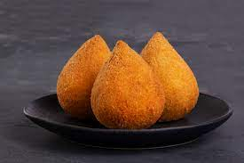

Bolinho de Bacalhau

Coxinha
Empada de Frango

Empadão de Frango

Esfiha de Carne

Guacamole Fresco

Pastel Assado

Pastel de Carne

Pizza Margherita

Sanduíche de Frango Grelhado

Compartilhe e experimente novas delícias!
Explore o mundo dos sabores salgados em nossa seção dedicada. De petiscos irresistíveis a pratos principais cheios de sabor, a Panela de Barro reúne receitas de salgados que vão aguçar seu paladar e inspirar sua criatividade na cozinha.
-- -- -- --AS RECEITAS ESTÃO ORGANIZADAS EM ORDEM ALFABETICA-- -- -- --
Não se preocupe, estamos aqui para ajudar a tornar sua busca por sabores inesquecíveis ainda mais fácil! Se você não encontrou a receita que procurava ou se tem uma ideia única em mente, queremos saber. Deixe-nos saber qual receita está faltando em nosso cardápio, e faremos o possível para adicioná-la. Sua sugestão pode ser a próxima estrela na nossa cozinha virtual. Entre em contato e ajude-nos a criar o repertório perfeito para todos os gostos! 🌟✨